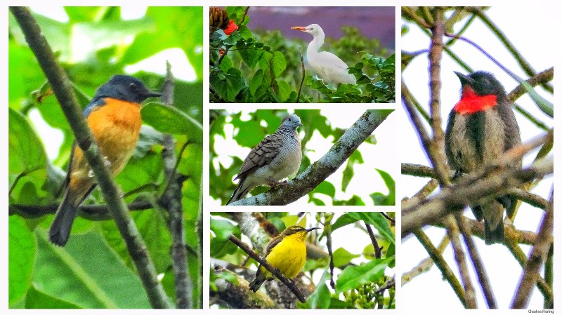

I offer hiking, sightseeing and birdwatching tour around Minahasa highland of North Sulawesi for visitors who are interested in watching various species of birds of Sulawesi as well as seeing beautiful forest, villages of Minahasan people, farmland and mountains of the region. The tour will be started from Manado city - the capital of the Province of North Sulawesi. I will meet you at the airport or at the hotel where you stay and then organize your tour around the province.

Birding Sites
Sonder - This small town is not far from Tomohon. Tounelet village is a great place to watch birds such as Sooty-headed Bulbul, Black-naped Oriole, Black-crowned White-eye, Sahul Sunbird, Crimson Sunbird, Cattle Egret, Little Egret, Purple Heron, Sulawesi Cuckoo Dove, Sulawesi Hanging Parrot, Sacred Kingfisher, Collared Kingfisher, Pale Blue Monarch, Spotted Dove, Zebra Dove, White-breasted Woodswallow, Grey-sided Flowerpecker, Chestnut Munia, Black-faced Munia, Sulawesi Drongo, White-eyed Drongo, and etc. Farmers in Sonder have fish and pig farms along the banks of the river. We can explore more birding sites in Sonder especially in Leilem, Tincep, Timbukar, Rambunan, and Sawangan areas. Visitor can spend between 3 to 4 days exploring the forest and farmland sites of Sonder to watch birds, butterflies and other wildlife.

Tomohon town - It is located at the feet of Mount Lokon and Mount Mahawu. The temperature is cool especially in the mornings and at nights. The car trip from Manado city will last around 30 minutes depending on the density of traffic. A lot of birds could be watched in the farmlands of Tomohon. Birds that could be seen include Chestnut Munia, Sooty-headed Bulbul, and Yellow-billed Malkoha, Red-eared Fruit Dove, Common Kingfisher, and Sulawesi Blue Flycatcher.

Mount Mahawu. Some important species to watch include Scaly Kingfisher, Citrine Canary Flycatcher, Crimson-crowned Flowerpecker, Mountain White Eye, Sulawesi Myzomela,. There are butterflies in the forest too.
We could spend several days in Tomohon to go hiking in Mahawu volcano, visit Lake Linow as well as seeing traditional Minahasan wooden house industry in Woloan village.
Rambunan is a small village under District Sonder. It is famous for its palm sugar from the sap of aren tree. A trip to watch the traditional process of palm sugar production can be watched in Rambunan.
For those who are interested in Minahasan food, they can try Tinutuan, and spicy grilled pork or grilled mujair fish. Our activities will be a combination of nature watching tour to find Scaly-breasted Kingfisher, and Sulawesi Scops Owl to sightseeing in Minahasan farmlands and village areas. Trips to see producers of earthenware products in Polutan village can also be organized.
We will leave Minahasan highland for Tangkoko Nature Reserve to watch birds, and monkeys and gliding lizards. The nature reserve is the habitat of a lot of species of birds including:
- Green-backed Kingfisher (Actenoides monachus)
- Sulawesi Lilac Kingfisher (Cittura cyanotis)
- Finch-billed Myna (Scissirostrum dubium) - The bird was formerly called Grossbeak Starling.
- Knobbed Hornbill (Rhyticeros cassidix)
- and White-necked Myna (Streptocitta albicollis).
There are snake, crested macaque monkey and a lot of species of insect too. An additional tour to beach area of Minahasa can be organized too to watch Great-billed Kingfisher, and shore birds.
A long the way, we will be able to watch waterfalls in Timbukar. In Tincep, we can stop for a while to see terraces of rice fields as well as various kinds of flowers which local people grow in frontyard of their houses.

Mount Ambang and go hiking to find Matinan Flycatcher.
The next morning, we will go to a Maleo sanctuary. There, we will watch Maleo birds and other beautiful birds of Kotamobagu such as Purple-winged Roller, Yellow-billed Malkoha, Sulawesi Pygmy Woodpecker, as well as Pale Blue Monarch, and Maroon-chinned Fruit Dove. We will spend several days here to explore its forest, and villages.
Where to stay in Minahasa?
Visitors traveling to the highland of Minahasa could easily find hotels, resorts and homestays to stay for a few nights. In Tomohon, there are Jhoanie Hotel, Hotel Villa Emitta, Wise Hotel Tomohon, Mountain View Resort and Spa, and etc.
Flight Routes
There are several routes to go to Manado city which is the main gate to Minahasa.
- Route 1: Singapore - Manado Fly from your country to Singapore. After that take a flight (usually served by Scoot air) to Manado city.
- Another international flight route is from Guangzhou to Manado city served by China Southern Airlines.
- Route 2: Jakarta - Manado Take a flight served by one of the domestic airlines such as City Link, Lion Air, Batik Air to Manado city via Makassar or Balikpapan.
- Route 3: Denpasar - Makassar - Manado
- Route 4: Sorong city - Manado, if you plan to take a holiday in Raja Ampat, your next trip can be traveling to Manado city and then explore Minahasa highland as well as other regencies in North Sulawesi.


Booking Please, contact me (Charles Roring) by email to: peace4wp@gmail.com or by whatsapp to: +6281332245180.

Extended Trip
We can continue our exploration of the province of North Sulawesi to Kotamobagu regency. It takes around 4 hours by car passing by villages, mountains, and farmlands. Visitors can stop at rice fields or at an open area along the roadside to watch birds such as Collared Kingfisher, Sunda Teal, Little Egret, Black-wing Stilt, Javan Pond Heron. Visitors need to bring their binoculars. A spotting scope on a stable tripod will greatly enhance the birding and wildlife watching experience.